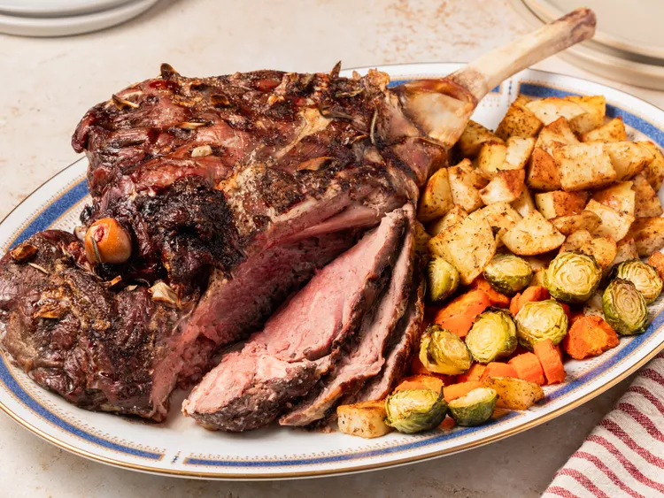

Roast Leg of Lamb

Description
This leg of lamb recipe is simple to prepare with thin slices of garlic and rosemary.
Cooking peeled potatoes in the pan around the roast is yummy. The only other things
you need are gravy made from the pan drippings and a fresh vegetable.
Ingredients
- 5 pounds leg of lamb
- 4 cloves garlic, sliced
- salt and ground black pepper to taste
- 2 tablespoons fresh rosemary
Steps
- Gather all ingredients. Preheat the oven to 350 degrees F (175 degrees C).
- Cut deep slits on the top of leg of lamb every 3 to 4 inches; push slices of garlic
down into the slits. Generously season with salt and pepper.
- Place lamb on a roasting pan; arrange several sprigs of fresh rosemary under and on
top of the lamb.
- Roast in the preheated oven for 1 3/4 to 2 hours, or until an instant-read
thermometer inserted into the center of the lamb reads at least
135 degrees F (57 degrees C) for medium-rare to medium doneness.
- Cover lamb with aluminum foil and let rest for at least 10 minutes before carving.
- Serve with your favorite sides, enjoy!
Back to Home Page